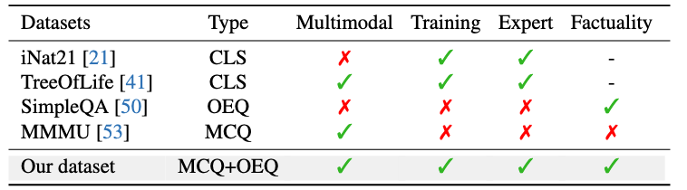
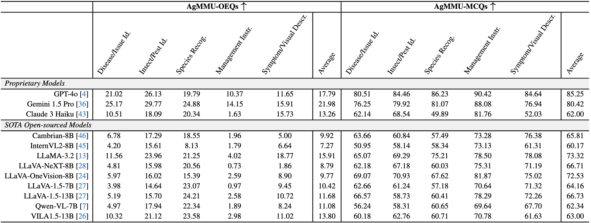
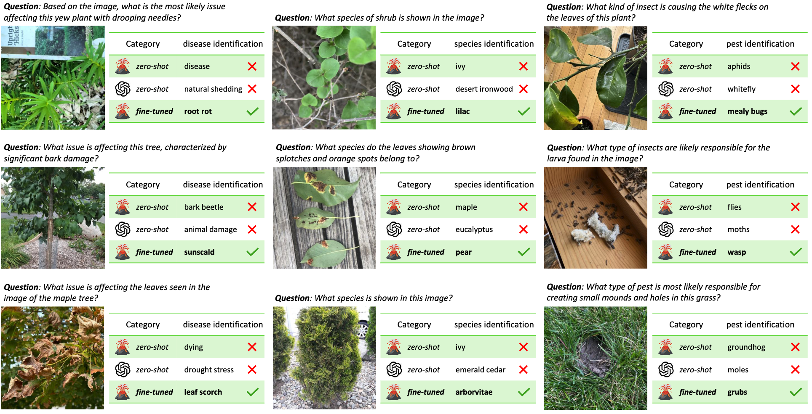

AgMMU
AgMMU
🔥[2025-01-10] AgMMU is out on arXiv! 🚀
We curate a dataset AgMMU for evaluating and developing vision-language models (VLMs) to produce factually accurate answers for knowledge-intensive expert domains. With SimpleQA pushing the factual accuracy of LLMs, VLMs also require investigation into factual accuracy. Our AgMMU concentrates on one of the most socially beneficial domains -- agriculture, which requires connecting detailed visual observation with precise knowledge to diagnose, e.g., pest identification, management instructions, etc. As a core uniqueness of our dataset, all facts, questions, and answers are extracted from 116,231 conversations between real-world users and authorized agricultural experts from US universities.
Compared with existing datasets (as above), AgMMU uniquely features knowledge-intensive questions for multi-modal understanding, coming from domain experts. More importantly, AgMMU features open-ended questions (OEQs) and a training set to enable the development of researchers.
After automatic processing using GPT-4o, LLaMA-70B, LLaMA-405B, AgMMU features a evaluation set of 5,793 multiple-choice evaluation questions paired and 3,390 factual open questions. We provide a development set containing 205,399 pieces of agricultural knowledge, encompassing disease identification, symptom and visual issue descriptions, management instructions, insect and pest identification, and species identification. As a multimodal factual dataset, it reveals that existing VLMs face significant challenges with questions requiring both detailed image perception and factual knowledge. Moreover, open-source VLMs still show a substantial performance gap compared to proprietary ones. To advance the development of knowledge-intensive VLMs, we conduct fine-tuning experiments using our development set, which improves LLaVA-1.5 by 4.7% on multiple-choice questions and 11.6% on open questions. We hope that our AgMMU can serve both as a evaluation benchmark dedicated to agriculture and a development suite for incorporating knowledge-intensive expertise into general-purpose VLMs.
AgMMU Benchmark
AgMMU, short for "Agricultural Multimodal Understanding", is a specially curated benchmark aiming at multimodal understanding in the agricultural domain. Besides the significance of agriculture-related research, our AgMMU is also a novel benchmark for knowledge intensive multimodal understanding of general vision-language models since agriculture-related questions generally require precise comprehension of image details (e.g., pest identification) and accurate memorization of facts (e.g., providing management suggestions). To support studies on agricultural and knowledge-intensive VLMs, our AgMMU constructs a benchmark that contains both an agricultural knowledge base for training and an evaluation set with multiple-choice and open-ended questions. All the data for AgMMU is collected from the AskExtension 2013-2024, which is a forum connecting users with gardening and agriculture questions to experts from Cooperative Extension/University staff within Land-Grant institutions from across the United States. These questions cover a wide range of plant knowledge, including weeds/invasive plants management, insects/pests control, general growing advice, generic plant identification, and disease/environmental stress and nutrient deficiency management.
AgMMU covers a wide range of agricultural knowledge and question types deriving from the real-world farmer-expert conversations. The knowledge is formulated into a balanced set of questions for both identification and clarification questions.

We conduct extensive evaluation of the existing vision-language models. The knowledge-intensive questions in AgMMU require both detailed image perception and accurate memorization of facts, and brings significant challenges for the VLMs, epsecially on the open-ended OEQs.
By finetuning a LLaVA model with our development set, we observe significant improvement of VLMs in understanding the visual information from agricultural images and connecting them to the correct agricultural knowledge.

@inproceedings{gauba2025agmmu,
title={AgMMU: A Comprehensive Agricultural Multimodal Understanding and Reasoning Benchmark},
author={Aruna Gauba and Irene Pi and Yunze Man and Ziqi Pang and Vikram S. Adve and Yu-Xiong Wang},
booktitle={arXiv},
year={2025},
}